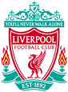

리버풀 축구 클럽(영어: Liverpool Football Club, 리버풀 축구단)은 잉글랜드 머지 사이드주 리버풀을 연고로 하는 프리미어리그 축구 클럽이다. 리버풀은 현재 통산 19회의 1부리그 우승을 한 바 있으며, 8번의 리그 컵 우승, 7번의 FA컵우승, 그리고 6번의 UEFA 챔피언스리그 우승을 차지한 바 있는데 챔피언스리그 우승은 잉글랜드 내에서는 역대 최다 우승 기록으로 기록되어 있다.
리버풀은 1892년에 창단되었으며, 그 후 비약적인 상승세를 보여 1900~1947년도까지 5번의 리그 우승을 거두기도 했었다. 하지만 1950년대에는 주로 2부리그에 머물러 있었고 1959년 빌 섕클리가 감독을 맡기 전까지 리버풀은 1부리그 승격을 하지 못했다.